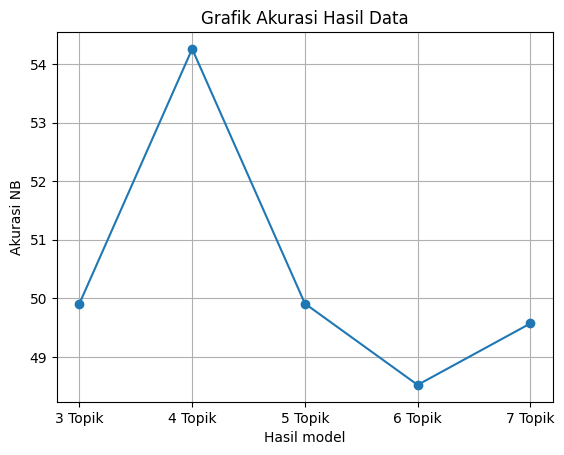

Implementasi Latent Directlet Allocation (LDA)#
Preprocessing#
# Membaca data
import pandas as pd
path = '/content/drive/MyDrive/ppw/tugas ppw/dataset/pta-infor-abstrak.csv'
data = pd.read_csv(path, delimiter=';')
data
---------------------------------------------------------------------------
FileNotFoundError Traceback (most recent call last)
<ipython-input-1-0bf62f2004a6> in <cell line: 4>()
2 import pandas as pd
3 path = '/content/drive/MyDrive/ppw/tugas ppw/dataset/pta-infor-abstrak.csv'
----> 4 data = pd.read_csv(path, delimiter=';')
5 data
/usr/local/lib/python3.10/dist-packages/pandas/util/_decorators.py in wrapper(*args, **kwargs)
209 else:
210 kwargs[new_arg_name] = new_arg_value
--> 211 return func(*args, **kwargs)
212
213 return cast(F, wrapper)
/usr/local/lib/python3.10/dist-packages/pandas/util/_decorators.py in wrapper(*args, **kwargs)
329 stacklevel=find_stack_level(),
330 )
--> 331 return func(*args, **kwargs)
332
333 # error: "Callable[[VarArg(Any), KwArg(Any)], Any]" has no
/usr/local/lib/python3.10/dist-packages/pandas/io/parsers/readers.py in read_csv(filepath_or_buffer, sep, delimiter, header, names, index_col, usecols, squeeze, prefix, mangle_dupe_cols, dtype, engine, converters, true_values, false_values, skipinitialspace, skiprows, skipfooter, nrows, na_values, keep_default_na, na_filter, verbose, skip_blank_lines, parse_dates, infer_datetime_format, keep_date_col, date_parser, dayfirst, cache_dates, iterator, chunksize, compression, thousands, decimal, lineterminator, quotechar, quoting, doublequote, escapechar, comment, encoding, encoding_errors, dialect, error_bad_lines, warn_bad_lines, on_bad_lines, delim_whitespace, low_memory, memory_map, float_precision, storage_options)
948 kwds.update(kwds_defaults)
949
--> 950 return _read(filepath_or_buffer, kwds)
951
952
/usr/local/lib/python3.10/dist-packages/pandas/io/parsers/readers.py in _read(filepath_or_buffer, kwds)
603
604 # Create the parser.
--> 605 parser = TextFileReader(filepath_or_buffer, **kwds)
606
607 if chunksize or iterator:
/usr/local/lib/python3.10/dist-packages/pandas/io/parsers/readers.py in __init__(self, f, engine, **kwds)
1440
1441 self.handles: IOHandles | None = None
-> 1442 self._engine = self._make_engine(f, self.engine)
1443
1444 def close(self) -> None:
/usr/local/lib/python3.10/dist-packages/pandas/io/parsers/readers.py in _make_engine(self, f, engine)
1733 if "b" not in mode:
1734 mode += "b"
-> 1735 self.handles = get_handle(
1736 f,
1737 mode,
/usr/local/lib/python3.10/dist-packages/pandas/io/common.py in get_handle(path_or_buf, mode, encoding, compression, memory_map, is_text, errors, storage_options)
854 if ioargs.encoding and "b" not in ioargs.mode:
855 # Encoding
--> 856 handle = open(
857 handle,
858 ioargs.mode,
FileNotFoundError: [Errno 2] No such file or directory: '/content/drive/MyDrive/ppw/tugas ppw/dataset/pta-infor-abstrak.csv'
# Cek jumlah data
data.shape
(853, 7)
# Ambil label
datalabel = data['Kelas']
datalabel
0 RPL
1 RPL
2 Komputasi
3 Komputasi
4 RPL
...
848 Komputasi
849 Komputasi
850 Komputasi
851 Komputasi
852 Komputasi
Name: Kelas, Length: 853, dtype: object
Ekstraksi Fitur#
# Menggunakan data tfidf yang telah disimpan sebelumnya
tfidf_df = pd.read_csv('/content/drive/MyDrive/ppw/tugas ppw/dataset/tfidf.csv')
tfidf_df
| aalysis | aam | ab | abad | abadi | abai | abdi | ability | abjad | absah | ... | zara | zat | zcz | zf | zona | zone | zoning | zoom | zucara | zungu | |
|---|---|---|---|---|---|---|---|---|---|---|---|---|---|---|---|---|---|---|---|---|---|
| 0 | 0.0 | 0.0 | 0.0 | 0.0 | 0.0 | 0.0 | 0.0 | 0.0 | 0.0 | 0.0 | ... | 0.0 | 0.0 | 0.0 | 0.0 | 0.0 | 0.0 | 0.0 | 0.0 | 0.0 | 0.0 |
| 1 | 0.0 | 0.0 | 0.0 | 0.0 | 0.0 | 0.0 | 0.0 | 0.0 | 0.0 | 0.0 | ... | 0.0 | 0.0 | 0.0 | 0.0 | 0.0 | 0.0 | 0.0 | 0.0 | 0.0 | 0.0 |
| 2 | 0.0 | 0.0 | 0.0 | 0.0 | 0.0 | 0.0 | 0.0 | 0.0 | 0.0 | 0.0 | ... | 0.0 | 0.0 | 0.0 | 0.0 | 0.0 | 0.0 | 0.0 | 0.0 | 0.0 | 0.0 |
| 3 | 0.0 | 0.0 | 0.0 | 0.0 | 0.0 | 0.0 | 0.0 | 0.0 | 0.0 | 0.0 | ... | 0.0 | 0.0 | 0.0 | 0.0 | 0.0 | 0.0 | 0.0 | 0.0 | 0.0 | 0.0 |
| 4 | 0.0 | 0.0 | 0.0 | 0.0 | 0.0 | 0.0 | 0.0 | 0.0 | 0.0 | 0.0 | ... | 0.0 | 0.0 | 0.0 | 0.0 | 0.0 | 0.0 | 0.0 | 0.0 | 0.0 | 0.0 |
| ... | ... | ... | ... | ... | ... | ... | ... | ... | ... | ... | ... | ... | ... | ... | ... | ... | ... | ... | ... | ... | ... |
| 817 | 0.0 | 0.0 | 0.0 | 0.0 | 0.0 | 0.0 | 0.0 | 0.0 | 0.0 | 0.0 | ... | 0.0 | 0.0 | 0.0 | 0.0 | 0.0 | 0.0 | 0.0 | 0.0 | 0.0 | 0.0 |
| 818 | 0.0 | 0.0 | 0.0 | 0.0 | 0.0 | 0.0 | 0.0 | 0.0 | 0.0 | 0.0 | ... | 0.0 | 0.0 | 0.0 | 0.0 | 0.0 | 0.0 | 0.0 | 0.0 | 0.0 | 0.0 |
| 819 | 0.0 | 0.0 | 0.0 | 0.0 | 0.0 | 0.0 | 0.0 | 0.0 | 0.0 | 0.0 | ... | 0.0 | 0.0 | 0.0 | 0.0 | 0.0 | 0.0 | 0.0 | 0.0 | 0.0 | 0.0 |
| 820 | 0.0 | 0.0 | 0.0 | 0.0 | 0.0 | 0.0 | 0.0 | 0.0 | 0.0 | 0.0 | ... | 0.0 | 0.0 | 0.0 | 0.0 | 0.0 | 0.0 | 0.0 | 0.0 | 0.0 | 0.0 |
| 821 | 0.0 | 0.0 | 0.0 | 0.0 | 0.0 | 0.0 | 0.0 | 0.0 | 0.0 | 0.0 | ... | 0.0 | 0.0 | 0.0 | 0.0 | 0.0 | 0.0 | 0.0 | 0.0 | 0.0 | 0.0 |
822 rows × 7451 columns
Implementasi LDA#
import numpy as np
import sklearn
from sklearn.decomposition import LatentDirichletAllocation
import pandas as pd
import os
k = 3
alpha = 0.1
beta = 0.2
lda_model = LatentDirichletAllocation(n_components=k, doc_topic_prior=alpha, topic_word_prior=beta)
# Proporsi topik pada dokumen
proporsi_topik_dokumen = lda_model.fit_transform(tfidf_df)
proporsi_topik_dokumen_df = pd.DataFrame(proporsi_topik_dokumen, columns=['Topik 1', 'Topik 2', 'Topik 3'])
# proporsi_topik_dokumen_df.insert(0,'stemmed_tokens', abstrak)
proporsi_topik_dokumen_df
| Topik 1 | Topik 2 | Topik 3 | |
|---|---|---|---|
| 0 | 0.016049 | 0.967888 | 0.016063 |
| 1 | 0.016953 | 0.966094 | 0.016954 |
| 2 | 0.015291 | 0.969416 | 0.015292 |
| 3 | 0.016642 | 0.966716 | 0.016642 |
| 4 | 0.015065 | 0.969871 | 0.015065 |
| ... | ... | ... | ... |
| 817 | 0.012371 | 0.975257 | 0.012372 |
| 818 | 0.013011 | 0.973978 | 0.013011 |
| 819 | 0.011742 | 0.976515 | 0.011743 |
| 820 | 0.014000 | 0.972000 | 0.014001 |
| 821 | 0.011833 | 0.976333 | 0.011834 |
822 rows × 3 columns
df_final = pd.concat([proporsi_topik_dokumen_df,datalabel],axis=1)
df_final
| Topik 1 | Topik 2 | Topik 3 | Kelas | |
|---|---|---|---|---|
| 0 | 0.016049 | 0.967888 | 0.016063 | RPL |
| 1 | 0.016953 | 0.966094 | 0.016954 | RPL |
| 2 | 0.015291 | 0.969416 | 0.015292 | Komputasi |
| 3 | 0.016642 | 0.966716 | 0.016642 | Komputasi |
| 4 | 0.015065 | 0.969871 | 0.015065 | RPL |
| ... | ... | ... | ... | ... |
| 848 | NaN | NaN | NaN | Komputasi |
| 849 | NaN | NaN | NaN | Komputasi |
| 850 | NaN | NaN | NaN | Komputasi |
| 851 | NaN | NaN | NaN | Komputasi |
| 852 | NaN | NaN | NaN | Komputasi |
853 rows × 4 columns
df_final.isna()
df_final.dropna(subset=['Topik 1', 'Topik 2', 'Topik 3', 'Kelas'],inplace = True)
# Cek kembali nilai NaN
df_final
| Topik 1 | Topik 2 | Topik 3 | Kelas | |
|---|---|---|---|---|
| 0 | 0.016049 | 0.967888 | 0.016063 | RPL |
| 1 | 0.016953 | 0.966094 | 0.016954 | RPL |
| 2 | 0.015291 | 0.969416 | 0.015292 | Komputasi |
| 3 | 0.016642 | 0.966716 | 0.016642 | Komputasi |
| 4 | 0.015065 | 0.969871 | 0.015065 | RPL |
| ... | ... | ... | ... | ... |
| 817 | 0.012371 | 0.975257 | 0.012372 | RPL |
| 818 | 0.013011 | 0.973978 | 0.013011 | Komputasi |
| 819 | 0.011742 | 0.976515 | 0.011743 | Komputasi |
| 820 | 0.014000 | 0.972000 | 0.014001 | RPL |
| 821 | 0.011833 | 0.976333 | 0.011834 | Komputasi |
822 rows × 4 columns
df_final.isna().sum()
Topik 1 0
Topik 2 0
Topik 3 0
Kelas 0
dtype: int64
# Proporsi kata pada topik
fitur = tfidf_df.columns.tolist()
ProporsiKataTopik = lda_model.components_
ProporsiKataTopik_df = pd.DataFrame(ProporsiKataTopik, columns = fitur)
ProporsiKataTopik_df.insert(0,'Topik',['Topik 1', 'Topik 2', 'Topik 3'])
ProporsiKataTopik_df
| Topik | aalysis | aam | ab | abad | abadi | abai | abdi | ability | abjad | ... | zara | zat | zcz | zf | zona | zone | zoning | zoom | zucara | zungu | |
|---|---|---|---|---|---|---|---|---|---|---|---|---|---|---|---|---|---|---|---|---|---|
| 0 | Topik 1 | 0.200000 | 0.200000 | 0.200000 | 0.200000 | 0.20000 | 0.200000 | 0.200000 | 0.200001 | 0.200000 | ... | 0.200000 | 0.200000 | 0.200000 | 0.200000 | 0.20000 | 0.200000 | 0.200000 | 0.200000 | 0.204663 | 0.204663 |
| 1 | Topik 2 | 0.328793 | 0.385749 | 0.200000 | 0.334778 | 0.35303 | 0.267158 | 0.211151 | 0.303441 | 0.527557 | ... | 0.349565 | 0.200000 | 0.280755 | 1.499126 | 0.72741 | 0.442267 | 0.523023 | 0.443579 | 0.288385 | 0.288385 |
| 2 | Topik 3 | 0.200000 | 0.200000 | 0.314202 | 0.200000 | 0.20000 | 0.200000 | 0.379349 | 0.200002 | 0.200000 | ... | 0.200000 | 0.288854 | 0.200000 | 0.200000 | 0.20000 | 0.200000 | 0.200000 | 0.210440 | 0.200000 | 0.200000 |
3 rows × 7452 columns
Modeling#
#Metrics
from sklearn.metrics import make_scorer, accuracy_score,precision_score
from sklearn.metrics import classification_report
from sklearn.metrics import confusion_matrix
from sklearn.metrics import accuracy_score ,precision_score,recall_score,f1_score
from sklearn.model_selection import KFold,train_test_split,cross_val_score
from sklearn.naive_bayes import GaussianNB
#Train and Test split
X = df_final.iloc[:,:3]
y = df_final['Kelas']
X_train,X_test,y_train,y_test= train_test_split(X,y,test_size=0.3,random_state=0)
X
| Topik 1 | Topik 2 | Topik 3 | |
|---|---|---|---|
| 0 | 0.016049 | 0.967888 | 0.016063 |
| 1 | 0.016953 | 0.966094 | 0.016954 |
| 2 | 0.015291 | 0.969416 | 0.015292 |
| 3 | 0.016642 | 0.966716 | 0.016642 |
| 4 | 0.015065 | 0.969871 | 0.015065 |
| ... | ... | ... | ... |
| 817 | 0.012371 | 0.975257 | 0.012372 |
| 818 | 0.013011 | 0.973978 | 0.013011 |
| 819 | 0.011742 | 0.976515 | 0.011743 |
| 820 | 0.014000 | 0.972000 | 0.014001 |
| 821 | 0.011833 | 0.976333 | 0.011834 |
822 rows × 3 columns
nbT3 = GaussianNB()
nbT3.fit(X_train, y_train)
Y_prediction = nbT3.predict(X_test)
accuracy_rf=round(accuracy_score(y_test,Y_prediction)* 100, 2)
acc_nb = round(nbT3.score(X_train, y_train) * 100, 2)
print('akurasi nb', acc_nb)
# KNN
from sklearn.neighbors import KNeighborsClassifier
knn = KNeighborsClassifier(n_neighbors = 3)
knn.fit(X_train, y_train)
Y_pred = knn.predict(X_test)
accuracy_knn=round(accuracy_score(y_test,Y_pred)* 100, 2)
acc_knn = round(knn.score(X_train, y_train) * 100, 2)
print('akurasi knn', acc_knn)
akurasi nb 49.91
akurasi knn 75.48
k = 4
alpha = 0.1
beta = 0.2
lda_model = LatentDirichletAllocation(n_components=k, doc_topic_prior=alpha, topic_word_prior=beta)
# Proporsi topik pada dokumen
proporsi_topik_dokumen = lda_model.fit_transform(tfidf_df)
proporsi_topik_dokumen_df4 = pd.DataFrame(proporsi_topik_dokumen, columns=['Topik 1', 'Topik 2', 'Topik 3', 'Topik 4'])
# proporsi_topik_dokumen_df.insert(0,'stemmed_tokens', abstrak)
proporsi_topik_dokumen_df4
| Topik 1 | Topik 2 | Topik 3 | Topik 4 | |
|---|---|---|---|---|
| 0 | 0.015794 | 0.633535 | 0.334878 | 0.015794 |
| 1 | 0.016671 | 0.757331 | 0.209328 | 0.016671 |
| 2 | 0.015061 | 0.954816 | 0.015062 | 0.015061 |
| 3 | 0.016369 | 0.950891 | 0.016370 | 0.016369 |
| 4 | 0.014841 | 0.955476 | 0.014842 | 0.014841 |
| ... | ... | ... | ... | ... |
| 817 | 0.012220 | 0.274156 | 0.701404 | 0.012220 |
| 818 | 0.012844 | 0.961459 | 0.012852 | 0.012844 |
| 819 | 0.011606 | 0.965181 | 0.011608 | 0.011606 |
| 820 | 0.013807 | 0.545794 | 0.426593 | 0.013807 |
| 821 | 0.011695 | 0.964915 | 0.011696 | 0.011695 |
822 rows × 4 columns
df_final4 = pd.concat([proporsi_topik_dokumen_df4,datalabel],axis=1)
df_final4
| Topik 1 | Topik 2 | Topik 3 | Topik 4 | Kelas | |
|---|---|---|---|---|---|
| 0 | 0.015794 | 0.633535 | 0.334878 | 0.015794 | RPL |
| 1 | 0.016671 | 0.757331 | 0.209328 | 0.016671 | RPL |
| 2 | 0.015061 | 0.954816 | 0.015062 | 0.015061 | Komputasi |
| 3 | 0.016369 | 0.950891 | 0.016370 | 0.016369 | Komputasi |
| 4 | 0.014841 | 0.955476 | 0.014842 | 0.014841 | RPL |
| ... | ... | ... | ... | ... | ... |
| 848 | NaN | NaN | NaN | NaN | Komputasi |
| 849 | NaN | NaN | NaN | NaN | Komputasi |
| 850 | NaN | NaN | NaN | NaN | Komputasi |
| 851 | NaN | NaN | NaN | NaN | Komputasi |
| 852 | NaN | NaN | NaN | NaN | Komputasi |
853 rows × 5 columns
df_final4.isna()
df_final4.dropna(subset=['Topik 1', 'Topik 2', 'Topik 3', 'Topik 4', 'Kelas'],inplace = True)
# Cek kembali nilai NaN
df_final4
| Topik 1 | Topik 2 | Topik 3 | Topik 4 | Kelas | |
|---|---|---|---|---|---|
| 0 | 0.015794 | 0.633535 | 0.334878 | 0.015794 | RPL |
| 1 | 0.016671 | 0.757331 | 0.209328 | 0.016671 | RPL |
| 2 | 0.015061 | 0.954816 | 0.015062 | 0.015061 | Komputasi |
| 3 | 0.016369 | 0.950891 | 0.016370 | 0.016369 | Komputasi |
| 4 | 0.014841 | 0.955476 | 0.014842 | 0.014841 | RPL |
| ... | ... | ... | ... | ... | ... |
| 817 | 0.012220 | 0.274156 | 0.701404 | 0.012220 | RPL |
| 818 | 0.012844 | 0.961459 | 0.012852 | 0.012844 | Komputasi |
| 819 | 0.011606 | 0.965181 | 0.011608 | 0.011606 | Komputasi |
| 820 | 0.013807 | 0.545794 | 0.426593 | 0.013807 | RPL |
| 821 | 0.011695 | 0.964915 | 0.011696 | 0.011695 | Komputasi |
822 rows × 5 columns
#Train and Test split
X = df_final4.iloc[:,:4]
y = df_final4['Kelas']
X_train,X_test,y_train,y_test= train_test_split(X,y,test_size=0.3,random_state=0)
nbT3 = GaussianNB()
nbT3.fit(X_train, y_train)
Y_prediction = nbT3.predict(X_test)
accuracy_rf=round(accuracy_score(y_test,Y_prediction)* 100, 2)
acc_nb2 = round(nbT3.score(X_train, y_train) * 100, 2)
print('akurasi nb', acc_nb2)
# KNN
from sklearn.neighbors import KNeighborsClassifier
knn2 = KNeighborsClassifier(n_neighbors = 3)
knn2.fit(X_train, y_train)
Y_pred = knn2.predict(X_test)
accuracy_knn2=round(accuracy_score(y_test,Y_pred)* 100, 2)
acc_knn2 = round(knn2.score(X_train, y_train) * 100, 2)
print('akurasi knn2', acc_knn2)
akurasi nb 54.26
akurasi knn2 72.87
k = 5
alpha = 0.1
beta = 0.2
lda_model = LatentDirichletAllocation(n_components=k, doc_topic_prior=alpha, topic_word_prior=beta)
# Proporsi topik pada dokumen
proporsi_topik_dokumen = lda_model.fit_transform(tfidf_df)
proporsi_topik_dokumen_df5 = pd.DataFrame(proporsi_topik_dokumen, columns=['Topik 1', 'Topik 2', 'Topik 3', 'Topik 4', 'Topik 5'])
# proporsi_topik_dokumen_df.insert(0,'stemmed_tokens', abstrak)
proporsi_topik_dokumen_df5
df_final5 = pd.concat([proporsi_topik_dokumen_df5,datalabel],axis=1)
df_final5.isna()
df_final5.dropna(subset=['Topik 1', 'Topik 2', 'Topik 3', 'Topik 4', 'Topik 5', 'Kelas'],inplace = True)
# Cek kembali nilai NaN
df_final5
| Topik 1 | Topik 2 | Topik 3 | Topik 4 | Topik 5 | Kelas | |
|---|---|---|---|---|---|---|
| 0 | 0.015548 | 0.015548 | 0.015548 | 0.015548 | 0.937808 | RPL |
| 1 | 0.016397 | 0.016397 | 0.016397 | 0.016397 | 0.934412 | RPL |
| 2 | 0.210231 | 0.014840 | 0.014838 | 0.014838 | 0.745254 | Komputasi |
| 3 | 0.016106 | 0.016106 | 0.016106 | 0.016106 | 0.935578 | Komputasi |
| 4 | 0.014624 | 0.014624 | 0.014624 | 0.014624 | 0.941504 | RPL |
| ... | ... | ... | ... | ... | ... | ... |
| 817 | 0.012072 | 0.012073 | 0.012074 | 0.287149 | 0.676632 | RPL |
| 818 | 0.012681 | 0.012681 | 0.012681 | 0.012681 | 0.949276 | Komputasi |
| 819 | 0.011473 | 0.011493 | 0.011473 | 0.011473 | 0.954087 | Komputasi |
| 820 | 0.013619 | 0.013628 | 0.013619 | 0.013619 | 0.945516 | RPL |
| 821 | 0.011559 | 0.011560 | 0.011559 | 0.011559 | 0.953762 | Komputasi |
822 rows × 6 columns
#Train and Test split
X = df_final5.iloc[:,:5]
y = df_final5['Kelas']
X_train,X_test,y_train,y_test= train_test_split(X,y,test_size=0.3,random_state=0)
nbT3 = GaussianNB()
nbT3.fit(X_train, y_train)
Y_prediction = nbT3.predict(X_test)
accuracy_rf=round(accuracy_score(y_test,Y_prediction)* 100, 2)
acc_nb3 = round(nbT3.score(X_train, y_train) * 100, 2)
print('akurasi nb', acc_nb3)
# KNN
from sklearn.neighbors import KNeighborsClassifier
knn3 = KNeighborsClassifier(n_neighbors = 3)
knn3.fit(X_train, y_train)
Y_pred = knn3.predict(X_test)
accuracy_knn3=round(accuracy_score(y_test,Y_pred)* 100, 2)
acc_knn3 = round(knn3.score(X_train, y_train) * 100, 2)
print('akurasi knn3', acc_knn3)
akurasi nb 49.91
akurasi knn3 76.35
k = 6
alpha = 0.1
beta = 0.2
lda_model = LatentDirichletAllocation(n_components=k, doc_topic_prior=alpha, topic_word_prior=beta)
# Proporsi topik pada dokumen
proporsi_topik_dokumen = lda_model.fit_transform(tfidf_df)
proporsi_topik_dokumen_df6 = pd.DataFrame(proporsi_topik_dokumen, columns=['Topik 1', 'Topik 2', 'Topik 3', 'Topik 4', 'Topik 5', 'Topik 6'])
# proporsi_topik_dokumen_df.insert(0,'stemmed_tokens', abstrak)
proporsi_topik_dokumen_df6
df_final6 = pd.concat([proporsi_topik_dokumen_df6,datalabel],axis=1)
df_final6.isna()
df_final6.dropna(subset=['Topik 1', 'Topik 2', 'Topik 3', 'Topik 4', 'Topik 5', 'Topik 6', 'Kelas'],inplace = True)
# Cek kembali nilai NaN
#Train and Test split
X = df_final6.iloc[:,:5]
y = df_final6['Kelas']
X_train,X_test,y_train,y_test= train_test_split(X,y,test_size=0.3,random_state=0)
nbT3 = GaussianNB()
nbT3.fit(X_train, y_train)
Y_prediction = nbT3.predict(X_test)
accuracy_rf=round(accuracy_score(y_test,Y_prediction)* 100, 2)
acc_nb4 = round(nbT3.score(X_train, y_train) * 100, 2)
print('akurasi nb', acc_nb4)
# KNN
from sklearn.neighbors import KNeighborsClassifier
knn4 = KNeighborsClassifier(n_neighbors = 3)
knn4.fit(X_train, y_train)
Y_pred = knn4.predict(X_test)
accuracy_knn4=round(accuracy_score(y_test,Y_pred)* 100, 2)
acc_knn4 = round(knn4.score(X_train, y_train) * 100, 2)
print('akurasi knn4', acc_knn4)
akurasi nb 48.52
akurasi knn4 74.43
k = 7
alpha = 0.1
beta = 0.2
lda_model = LatentDirichletAllocation(n_components=k, doc_topic_prior=alpha, topic_word_prior=beta)
# Proporsi topik pada dokumen
proporsi_topik_dokumen = lda_model.fit_transform(tfidf_df)
proporsi_topik_dokumen_df7 = pd.DataFrame(proporsi_topik_dokumen, columns=['Topik 1', 'Topik 2', 'Topik 3', 'Topik 4', 'Topik 5', 'Topik 6', 'Topik 7'])
# proporsi_topik_dokumen_df.insert(0,'stemmed_tokens', abstrak)
proporsi_topik_dokumen_df7
df_final7 = pd.concat([proporsi_topik_dokumen_df7,datalabel],axis=1)
df_final7.isna()
df_final7.dropna(subset=['Topik 1', 'Topik 2', 'Topik 3', 'Topik 4', 'Topik 5', 'Topik 6', 'Topik 7', 'Kelas'],inplace = True)
# Cek kembali nilai NaN
#Train and Test split
X = df_final7.iloc[:,:5]
y = df_final7['Kelas']
X_train,X_test,y_train,y_test= train_test_split(X,y,test_size=0.3,random_state=0)
nbT3 = GaussianNB()
nbT3.fit(X_train, y_train)
Y_prediction = nbT3.predict(X_test)
accuracy_rf=round(accuracy_score(y_test,Y_prediction)* 100, 2)
acc_nb5 = round(nbT3.score(X_train, y_train) * 100, 2)
print('akurasi nb', acc_nb5)
# KNN
from sklearn.neighbors import KNeighborsClassifier
knn5 = KNeighborsClassifier(n_neighbors = 3)
knn5.fit(X_train, y_train)
Y_pred = knn5.predict(X_test)
accuracy_knn5=round(accuracy_score(y_test,Y_pred)* 100, 2)
acc_knn5 = round(knn5.score(X_train, y_train) * 100, 2)
print('akurasi knn5', acc_knn5)
akurasi nb 49.57
akurasi knn5 75.13
import matplotlib.pyplot as plt
# Contoh data akurasi (ganti dengan data akurasi Anda)
hasil_akurasi = [acc_nb, acc_nb2, acc_nb3, acc_nb4, acc_nb5]
# Nomor iterasi atau label untuk setiap hasil akurasi (misalnya, iterasi 1, iterasi 2, dst.)
nomor_iterasi = ['3 Topik', '4 Topik', '5 Topik', '6 Topik', '7 Topik']
# Membuat plot
plt.plot(nomor_iterasi, hasil_akurasi, marker='o', linestyle='-')
# Menambahkan label sumbu x dan y
plt.xlabel('Hasil model')
plt.ylabel('Akurasi NB')
# Menambahkan judul plot
plt.title('Grafik Akurasi Hasil Data')
# Menampilkan grid (opsional)
plt.grid(True)
# Menampilkan plot
plt.show()

# import matplotlib.pyplot as plt
# import numpy as np
# # Hasil akurasi Model Naive Bayes dan Model KNN (ganti dengan hasil akurasi Anda)
# akurasi_nb = [acc_nb3, acc_nb4, acc_nb5, acc_nb6, acc_nb7, acc_nb8] # Contoh hasil akurasi NB
# akurasi_knn = [acc_knn3, acc_knn4, acc_knn5, acc_knn6, acc_knn7, acc_knn8] # Contoh hasil akurasi KNN
# # Nomor iterasi atau label untuk setiap hasil akurasi (misalnya, iterasi 1, iterasi 2, dst.)
# nomor_iterasi = range(3,9)
# # Lebar batang dalam diagram
# lebar_batang = 0.2
# # Membuat posisi batang untuk kedua model
# posisi_nb = np.arange(len(nomor_iterasi))
# posisi_knn = [x + lebar_batang for x in posisi_nb]
# # Mengatur ukuran gambar
# plt.figure(figsize=(10, 6))
# # Membuat plot
# plt.bar(posisi_nb, akurasi_nb, lebar_batang, label='Naive Bayes', color='blue')
# plt.bar(posisi_knn, akurasi_knn, lebar_batang, label='K-Nearest Neighbors', color='green')
# # Menambahkan label sumbu x dan y
# plt.xlabel('Iterasi')
# plt.ylabel('Akurasi')
# # Menambahkan judul plot
# plt.title('Perbandingan Akurasi Model Naive Bayes dan K-Nearest Neighbors')
# # Menambahkan label pada sumbu x (menggunakan nomor iterasi)
# plt.xticks([pos + lebar_batang / 2 for pos in posisi_nb], nomor_iterasi)
# # Menampilkan legenda
# plt.legend()
# # Menampilkan plot
# plt.show()